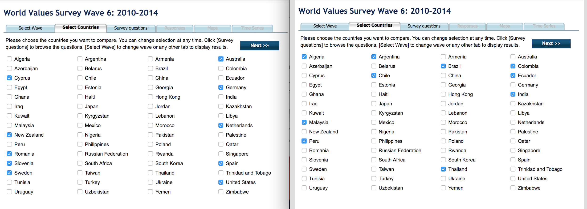
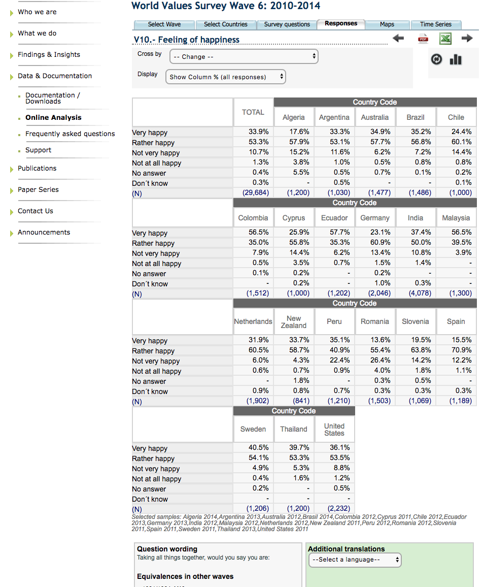
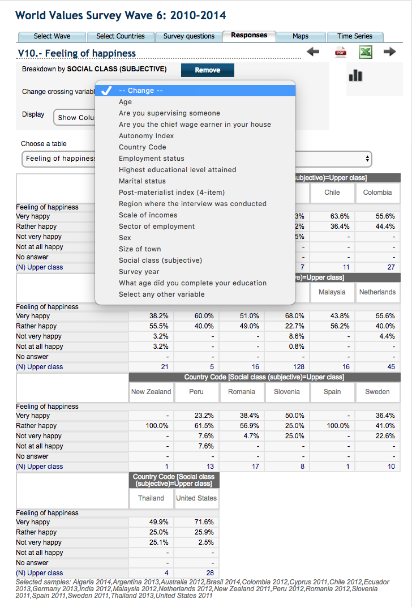
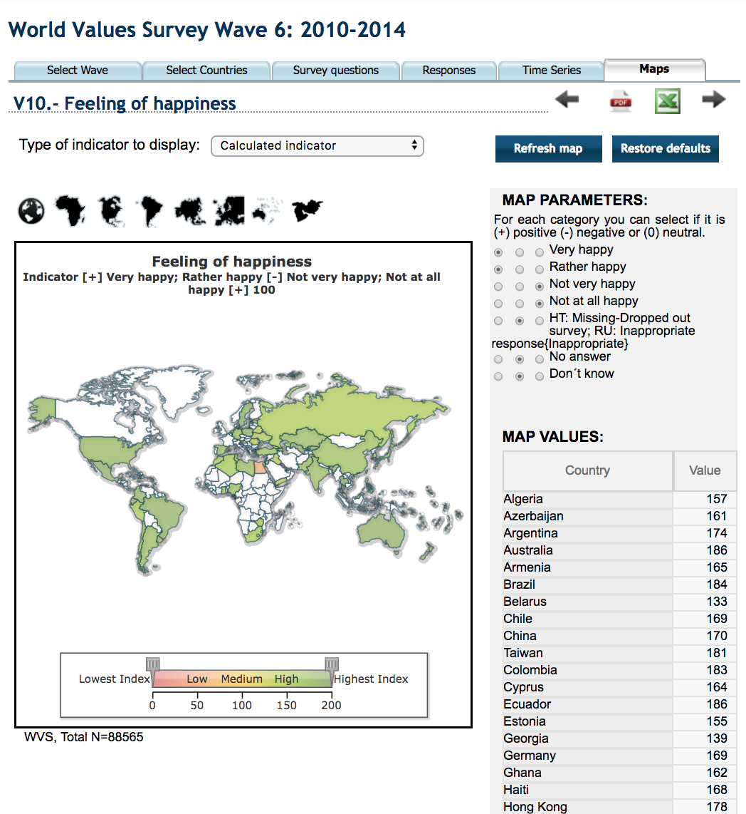
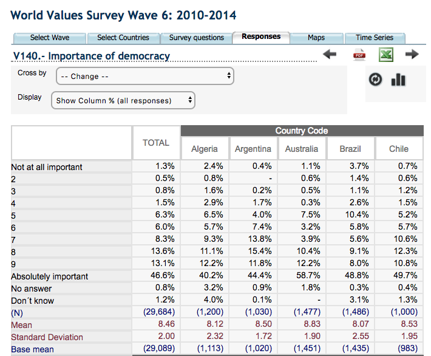
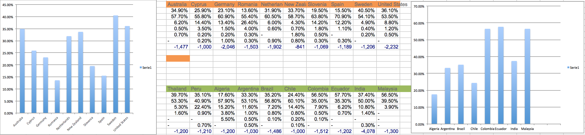
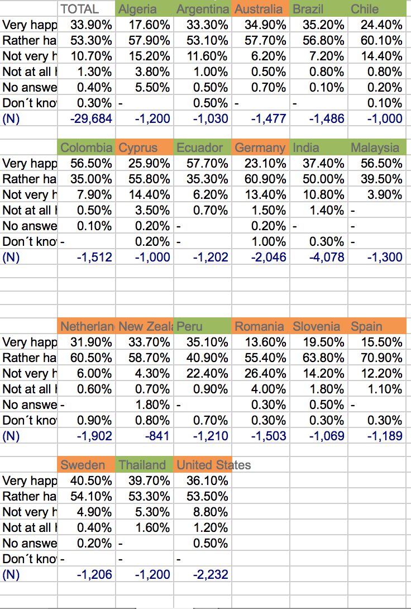

Chosen research objective
Determining whether some set of variables are specific for ”developing countries” versus ”developed countries”.
Distribution of countries (10 developed and 10 developing) based on this (http://www.un.org/en/development/desa/policy/wesp/wesp_current/2014wesp_country_classification.pdf) classification from the UN.
Filtering/choosing countries on WVS

Choosing variables, time-waves, noticing lacking functionality with WVS tool

For the visual data mining with WVS tool, it could not easily present a visual that shows the relations between the time waves. Therefore, this was what I would do with D3 (if I could get it to work).
Breakdown by variable




This is a screenshot of how WVS’ visualisation tool looks like.
According to my overarching research objective (compare ”developed” countries to ”developing” countries), I would want a tool where it is possible to group the replies into one cluster of ”developing” countries, and one cluster with ”developed” countries.
This also only shows one wave at a time (above is a screenshot from wave 2010-2014). Analysis of this visualisation (tool)
Important variables: wave,
Therefore, I will create a visualisation where it is mo
Attempt to improve WVS’ tool

Plan for D3 visualisation (but illustrated through excel instead)
I would create a D3 visualisation tool where I could
Learnings
I have actually never used GitHub desktop before so I got the chance to do that this time. I am really not skilled in any language besides Python/Matlab so it was fun to start with Github. Now I am quite curious to learn D3 actually!
Visualisation- wise, my main learning is how you can think in variables, and then think that you can map the variables towards each other. At first, I did not see how to easily map the data, but when thinking in time wave, I saw that it was not efficient to map these towards each other.